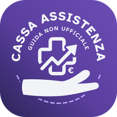

CassaAssistenza
Guida non ufficiale alla nuova Cassa Assistenza di Gruppo
Tutto sull’accordo del 10 novembre 2026 in un’app per il telefono: il testo firmato con le sintesi, le tappe, che cosa cambia per te, il calcolo dei contributi, le casse di oggi e le novità dai sindacati, con le notifiche. Gratis, senza registrazione, senza passare dagli store.
Installala sul telefono in un minuto
Su iPhone
Usa Safari. Se il collegamento si è aperto dentro WhatsApp, Mail o un’altra app, tocca il tasto per aprirlo in Safari: di solito la bussola, oppure e poi Apri in Safari.
iOS 26 e successivi
- Tocca Apri la guida qui sopra: devi essere sulla pagina della guida, non su questa.
- In basso, accanto all’indirizzo della pagina, tocca il tasto con le tre lineette . Se non lo vedi, cerca il tasto con i tre puntini .
- Nel menu che si apre tocca Condividi .
- Scorri l’elenco e tocca Aggiungi alla schermata Home . Se non c’è, tocca prima Altro o Mostra altro.
- Il nome è già CassaAssistenza. Lascia acceso Apri come app web e tocca Aggiungi.
iOS 18 e precedenti
- Tocca Apri la guida qui sopra.
- Tocca il tasto Condividi , in basso al centro (sull’iPad in alto a destra).
- Scorri e tocca Aggiungi alla schermata Home , poi Aggiungi.
Per sapere quale iOS hai: Impostazioni, Generali, Info, voce Versione iOS.
Su Android
- Apri il collegamento con Chrome e tocca Apri la guida qui sopra.
- Se in basso compare Installa app, toccalo. Altrimenti tocca il menu in alto a destra e scegli Installa app (in alcune versioni Aggiungi a schermata Home, poi Installa).
- Conferma con Installa: l’icona di CassaAssistenza compare tra le app.
Con Samsung Internet: tocca il menu in basso, poi Aggiungi pagina a e Schermata Home.
Sul computer
- Con Chrome o Edge: apri la guida e tocca l’icona di installazione nella barra dell’indirizzo, oppure dal menu scegli la voce per installarla come app.
- Con Safari su Mac: apri la guida, poi menu File e Aggiungi al Dock.
- In ogni caso puoi usarla anche dal browser, come un normale sito.
Per installarla sul telefono, inquadra questo codice con la fotocamera.
Attiva le notifiche
- Apri CassaAssistenza dall’icona sulla schermata Home (su iPhone le notifiche funzionano solo così, con iOS 16.4 o successivo).
- Tocca Novità, poi Attiva le notifiche e infine Consenti.
- Da quel momento ti avvisa quando sindacati, casse o fonti di legge pubblicano qualcosa sulla Cassa.
Gli aggiornamenti
La guida si aggiorna da sola, non devi reinstallarla. Quando compare È pronta una versione aggiornata, tocca Aggiorna. Funziona anche senza rete, con i contenuti dell’ultima apertura.
Se qualcosa non va
Non trovo «Aggiungi alla schermata Home»
Controlla di essere in Safari e non dentro un’altra app. Nel menu Condividi scorri fino in fondo o tocca Altro.
L’icona apre questa pagina invece della guida
Tienila premuta, eliminala e aggiungila di nuovo partendo da Apri la guida.
Le notifiche non arrivano
Apri la guida dall’icona, non dal browser. Poi controlla in Impostazioni, Notifiche, CassaAssistenza che siano consentite.